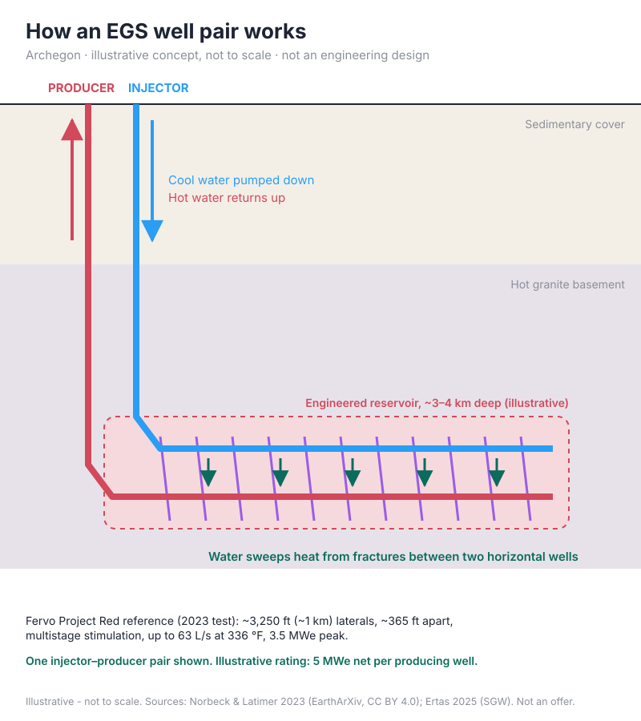
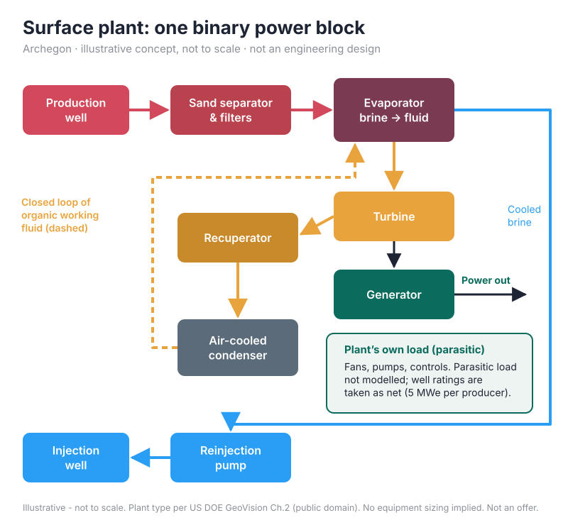
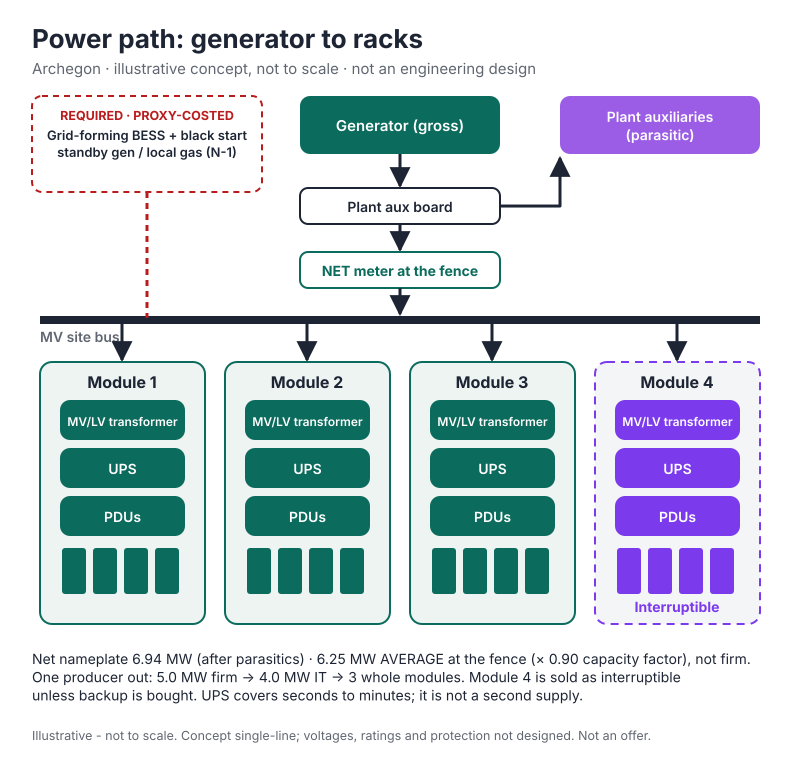
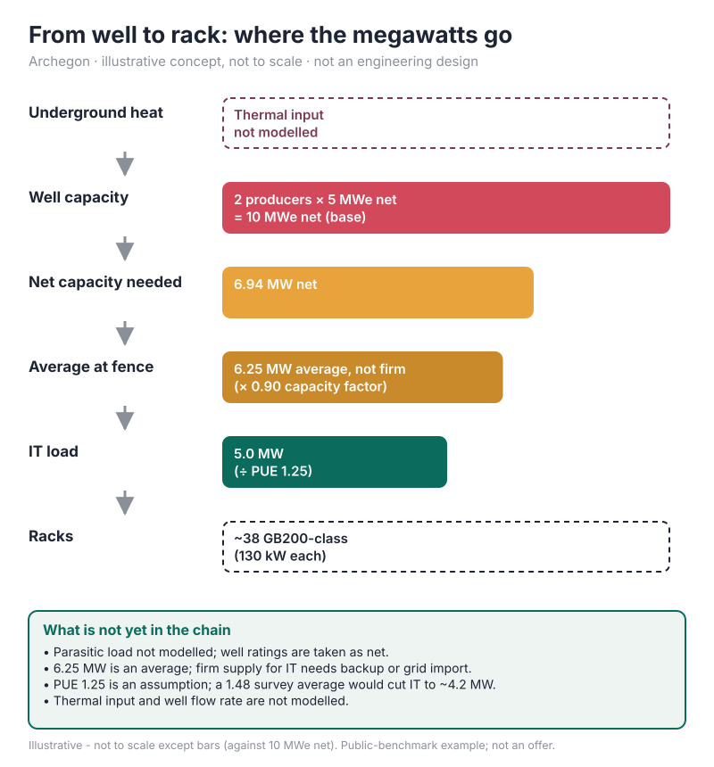
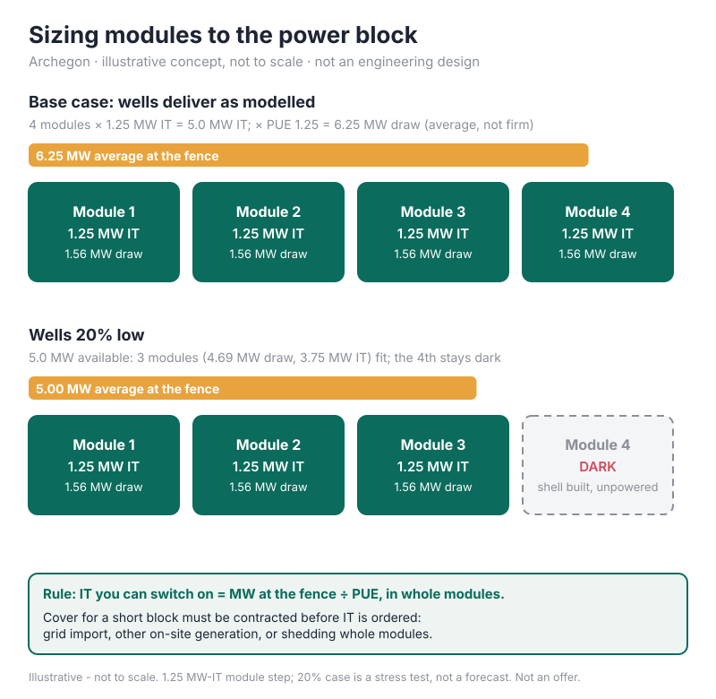

How it works
Five illustrative concept diagrams showing how heat from an engineered geothermal reservoir can become power for modular AI compute. They are not to scale, not engineering designs, and not a description of any specific site.





Figures are illustrative and drawn from public benchmarks (sources credited on each diagram). Detailed financial models, capital stacks and return figures are shared only within a qualified diligence process. Nothing on this site is an offer of securities or financial advice.